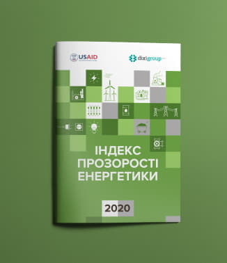

<!--DEV
@ @include('blocks/download-index/download-index.html')
-->

<article class="download-index">
  <div class="download-index__inner">
    <div class="download-index__img">
      <div class="embed-responsive embed-responsive--index-img">
        <picture>
          <source srcset="img/transparency-index-2020.webp" media="(min-width: 1280px)" type="image/webp">
          <source srcset="img/transparency-index-2020.jpg" media="(min-width: 1280px)">
            <!-- 282x327, 564x654 2x -->
          <source srcset="img/transparency-index-2020.webp" media="(min-width: 768px)" type="image/webp">
          <source srcset="img/transparency-index-2020.jpg" media="(min-width: 768px)">
            <!-- 224x260, 448x520 2x -->
          <source srcset="img/transparency-index-2020.webp" media="(min-width: 360px)" type="image/webp">
          <source srcset="img/transparency-index-2020.jpg" media="(min-width: 360px)">
            <!-- 328x380, 656x760 2x -->
          
        </picture>
      </div>
    </div>
    <div class="download-index__text">
      <h2 class="h3  download-index__title">Download the latest index</h2>
      <p class="download-index__intro">Is a tool for policymakers to compare national policy frameworks for sustainable energy and identify opportunities to attract investment. Assesses countries’ policy support for each of the three pillars of sustainable energy – access to electricity, access to clean cooking (for 55 access-deficit countries), energy efficiency, and renewable energy.</p>
      <a href="#" class="btn" download><span>Download report</span></a>
    </div>
  </div>
</article>
